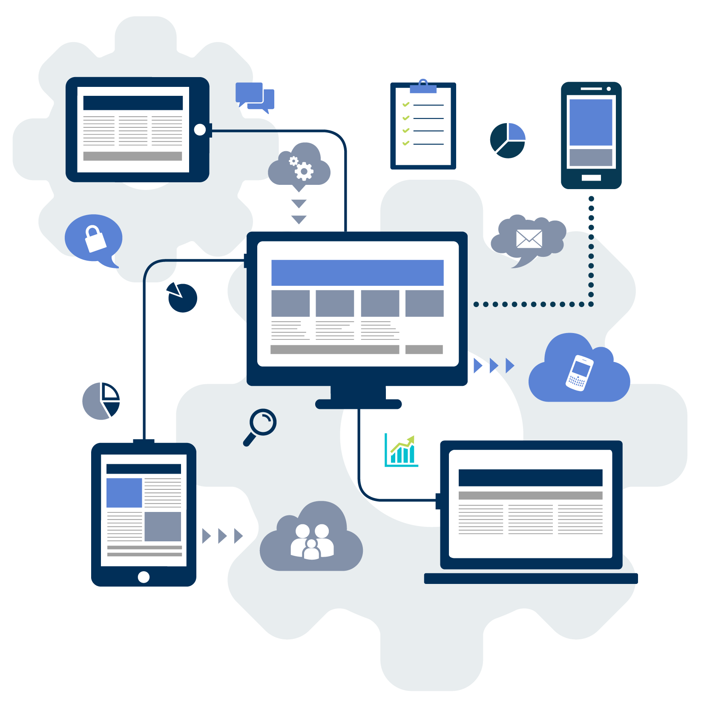

SaaS软件相比传统软件有着巨大优势
易对账广告公司管理软件是基于SaaS模式的软件，SaaS，软件即服务（Software-as-a-service），即软件不再做为一个产品去销售，而是做为一种服务去租用。
百度百科对Saas的官方定义
SaaS提供商为企业搭建信息化所需要的所有网络基础设施及软件、硬件运作平台，并负责所有前期的实施、后期的维护等一系列服务，企业无需购买软硬件、建设机房、招聘IT人员，即可通过互联网使用信息系统。
就像打开自来水龙头就能用水一样，企业根据实际需要，向SaaS提供商租赁软件服务。
https://baike.baidu.com/item/saas/6703273?fr=aladdin
腾讯QQ邮箱、阿里巴巴的钉钉，都属于SaaS模式
当前，全世界的软件行业正在往SaaS模式切换并获得了蓬勃发展，就连微软都已经把Office软件从销售模式转成在线租用的商业模式，业界最成功的SaaS应用-美国Salesforce公司的市值超过1000亿美金，而在中国，这种软件模式其实也已经非常流行，腾讯公司的QQ邮箱、阿里巴巴的钉钉、百度的云盘等，都属于SaaS模式。
“软件正在蚕食整个世界”
世界上第一款浏览器Netscape发明者-美国网景通信公司创始人，美国安德森•霍洛维茨(Andreessen Horowitz)基金联合创始人马克•安德森(Marc Andreessen)说“软件正在蚕食整个世界“！这里所说的软件，当然不是指那种需要自己安装、自己维护的传统软件，而是指基于云计算和移动互联网技术开发的SaaS软件。
易对账广告公司管理软件与传统软件对比，有哪些优势？
|
优势一 使用成本 |
软件 | 传统软件 | 易对账软件 |
|---|---|---|---|
| 软件模式 | 传统软件模式（需要安装部署在自己电脑或服务器上的软件产品，数据在本地） | SaaS模式（数据在云计算服务器），无需安装。 | |
| 软件购买费用 | 一次性支付，承担购买软件的投资风险，万一用不起来就浪费钱了 | 0元 互联网时代的软件都是免费的了！！！ | |
| 维护服务费用 | 每年收取维护费/升级费，你不付费就升级不了 | 根据需要选择软件功能和使用时长来支付相应服务费，没有投资沉没成本，不会浪费钱 | |
| 硬件购买或更新费用 | 购买服务器用于安装软件/购买备份设备用于数据备份（机器性能下降后得更换） | 0元 （打开浏览器或APP即可使用） | |
|
优势二 用户体验 |
使用方式 | 必须在局域网内的固定设备上安装本地客户端才能使用，很不方便 | 随时随地，只要能上网就行，办公室任何电脑/出差/居家/旅游皆可访问，支持iPhone、安卓手机 |
| 产品界面 | 传统软件界面老旧，功能繁杂，像大杂烩 | 产品界面简洁明了，使用轻快流畅，业务精炼好用 | |
| 学习成本 | 操作复杂，学习成本高，需要专门的培训，有的人一个月都学不会 | 操作简便，完全互联网化界面，10分钟学会使用 | |
|
优势三 数据安全 |
数据安全 | 自己维护，开放的数据库，中病毒或者木马软件都会导致数据泄漏，依赖于电脑系统，稳定性差。 | 先进的云数据库存储，多重防火墙保护数据安全，运行在最稳定的Linux系统中，加密存储，加密SSL方式传输，无惧黑客窃取。 |
| 数据备份 | 几乎依赖于自己的备份策略，大部分没有备份的概念，数据库损坏则数据丢失，电脑系统损坏数据也会丢失，甚至电脑丢失也会导致数据无法挽回。 | 数据存放在阿里云腾讯云UCloud等服务器中，每24小时备份一次，每7天异地备份一次。任何意外都不会导致数据丢失。极速数据恢复。 | |
| 软件成长性 | 买断软件，几乎没有成长性可言，即使用多年也没有多大的变化。 | 良好的成长性，不断升级更新，每周都有新功能新优化上线，持续享用最新管理理念的业务及最新技术的支持。 | |
Saas软件的价值阐述
一个软件工具或产品，如果只能满足一些简单的需求，没有跟随用户需求变化持续快速创新，它必将是没有生命力的。
易对账广告公司管理软件，不但能实现基本的业务订单和往来账务处理，还具备企业内部协作提高管理效率、与外部合作伙伴协作实现产业链共赢的延伸价值。
未来，易对账软件的产品升级将始终围绕着为用户提高管理效率、降低成本、增加生意商机、提供资金周转等方向不断前进！
SaaS软件的发展趋势气势如虹，能帮助用户将其业务实现在线化、可持续化、可量化地发展！早日拥抱早日受益。